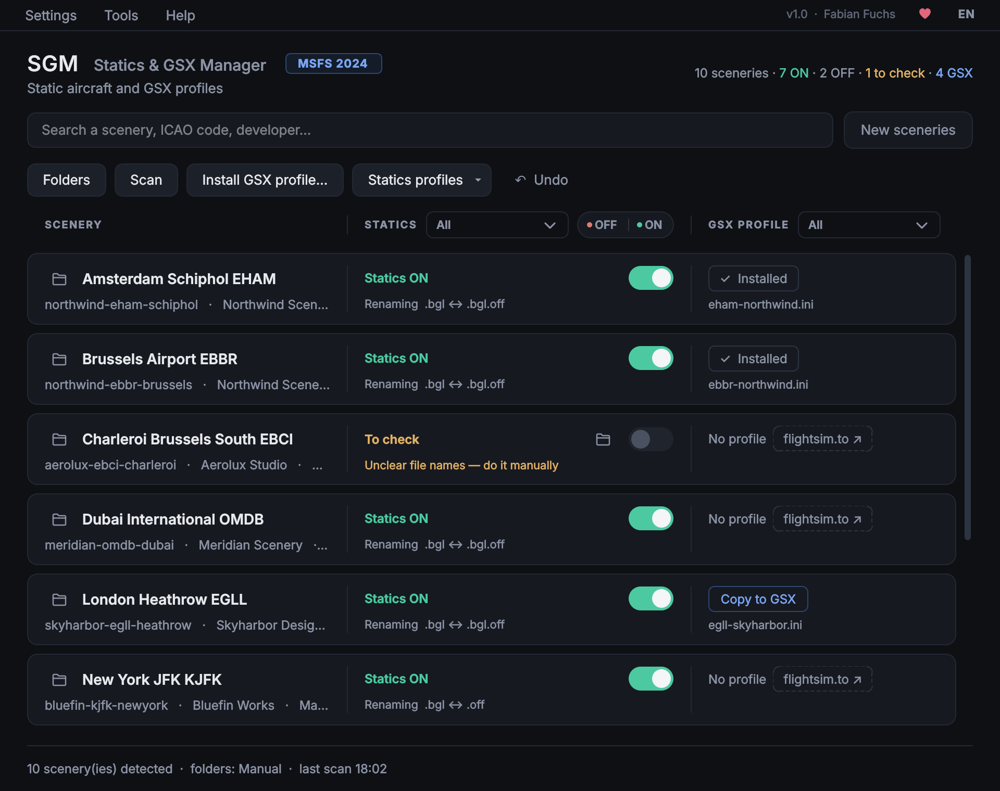

Switch your airports' static aircraft on or off in one click, and get your GSX Pro profiles where they belong.

Close the simulator before changing statics: it reads these files at startup and may lock them.
The files of this action went back exactly as they were before.
Your settings, backups and profiles are kept. If something goes wrong, the previous version is put back.